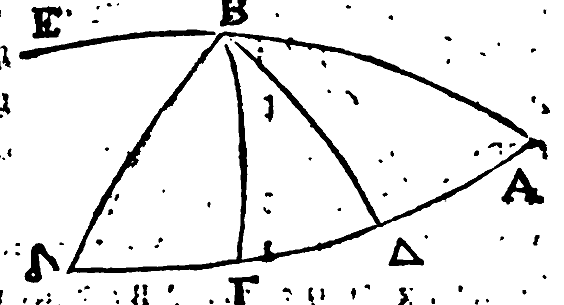

Proposition III.6 — De Bisectione Anguli Sphaerici (Latin)¶
Menelai Alexandrini Sphaericorum Lib. III Prop. VI. Theor. (Halley 1758, pp. 91–92)


Prop. VI. Theor. (Halley 1758, p. 91)¶
Enuntiatio (Halley 1758, p. 91)
Si dividatur angulus aliquis trianguli Sphaerici bifariam, erunt sinus duorum laterum ad sinus duorum segmentorum basis in eadem ratione: & conversim & permutatim.
[§4.1 · Demonstratio, p. 91] Sit triangulum Sphaericum ΑΒΓ, & secet arcus ΒΔ angulum ΑΒΓ bifariam; dico sinum arcus ΑΒ esse ad sinum arcus ΑΔ sicut sinus arcus ΒΓ ad sinum arcus ΔΓ.
In triangulis enim Sphaericis ΑΒΔ, ΓΒΔ, duo anguli ΑΒΔ, ΓΒΔ sunt aequales, duo vero anguli ad punctum Δ simul sumpti sunt aequales duobus rectis: erit igitur (per 2m III. hujus) sinus arcus ΒΑ ad sinum arcus ΑΔ sicut sinus arcus ΒΓ ad sinum arcus ΓΔ, & ἐναλλὰξ erunt etiam proportionales.
E converso vero, si sinus arcus ΑΒ fuerit ad sinum arcus ΒΓ sicut sinus arcus ΑΔ ad sinum arcus ΔΓ: dico arcum ΒΔ dividere angulum ΑΒΓ bifariam. Quoniam enim duo anguli apud Δ sunt aequales duobus rectis, & sinus arcus ΑΒ est ad sinum arcus ΑΔ sicut sinus arcus ΒΓ ad sinum arcus ΓΔ: erunt (è converso Prop. 2dae III. hujus) anguli ΑΒΔ, ΔΒΓ vel aequales vel simul sumpti duobus rectis aequales; sed non sunt duobus rectis aequales, adeoque angulus ΑΒΔ aequalis erit angulo ΔΒΓ. Q. E. D.
Rursus ponatur angulus ΓΒΕ, qui deinceps est angulo ΑΒΓ, bifariam dividi arcu Βδ; dico sinum arcus ΑΒ esse ad sinum arcus ΒΓ sicut sinus arcus Αδ ad sinum arcus δΓ: atque etiam ἐναλλὰξ. Quoniam enim duo triangula ΑΒδ, ΓΒδ habeant angulum ad δ utrique communem, duos vero angulos ΑΒδ, ΓΒδ simul sumptos aequales duobus rectis, eadem ratione constabit proportio. Q. E. D.